Understand the ecosystem
The documented research includes stakeholder mapping, surveys, interviews, personas and a customer journey. These artifacts frame food waste as a service and access problem.
Surplus food.
A second opportunity.
A service connecting surplus fresh food with people who need it. Foodark brings together retailers, a dual-sided mobile platform and food collection units to reduce waste and improve access.

Foodark examines how unsold food can become a community resource after shops close. The system considers the needs of retailers alongside those of low-income and refugee families, with dignity and access at the centre of the service.
The documented research includes stakeholder mapping, surveys, interviews, personas and a customer journey. These artifacts frame food waste as a service and access problem.
A customer app, retailer app and physical collection unit form the service. Each touchpoint supports a different part of finding, offering and collecting surplus food.
Prototype feedback identifies clearer instructions, retailer authentication, voice search, varied storage sizes and a cash option as areas for iteration. These are proposed improvements, rather than confirmed released features.
Selected drawings, prototypes and interface studies from the original project.
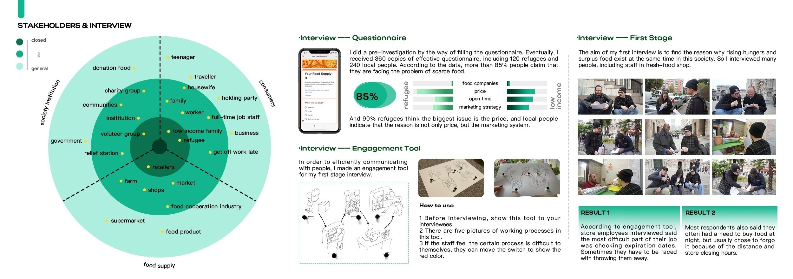
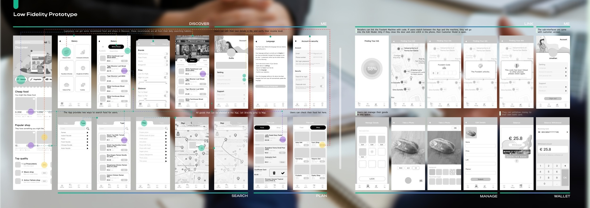
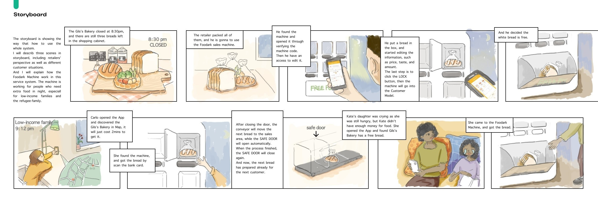
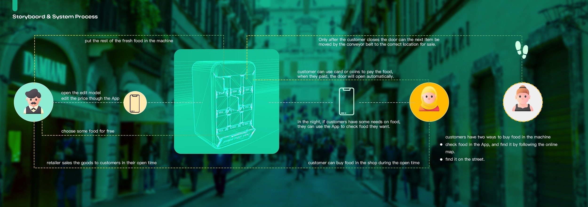
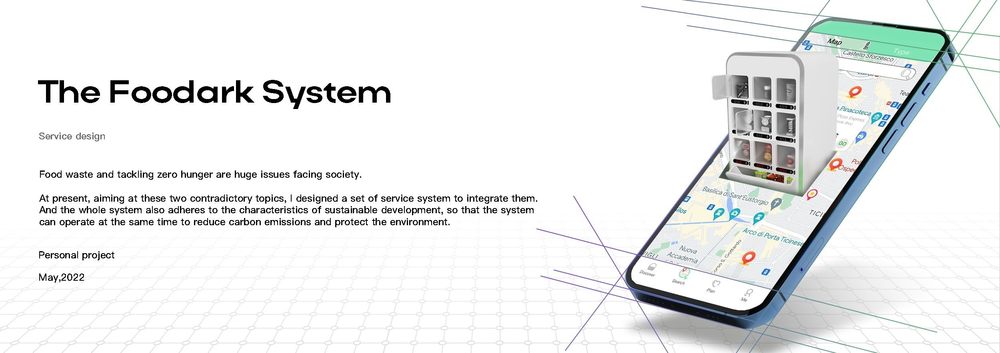
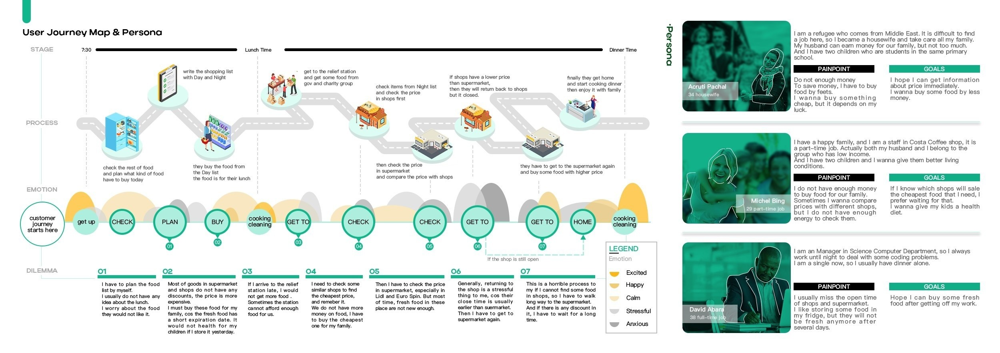
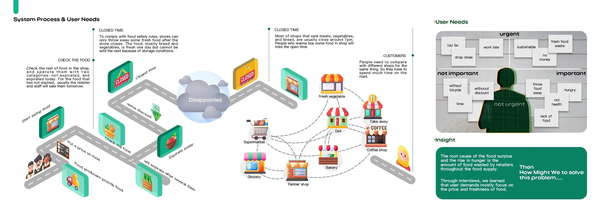
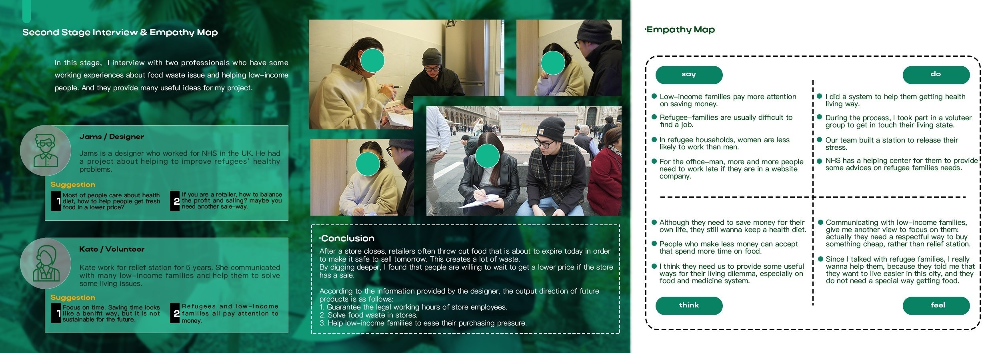
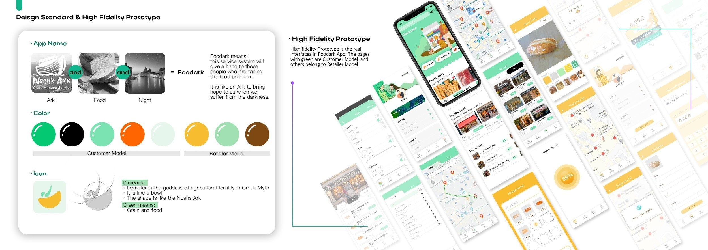
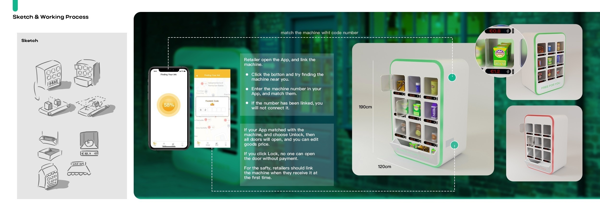
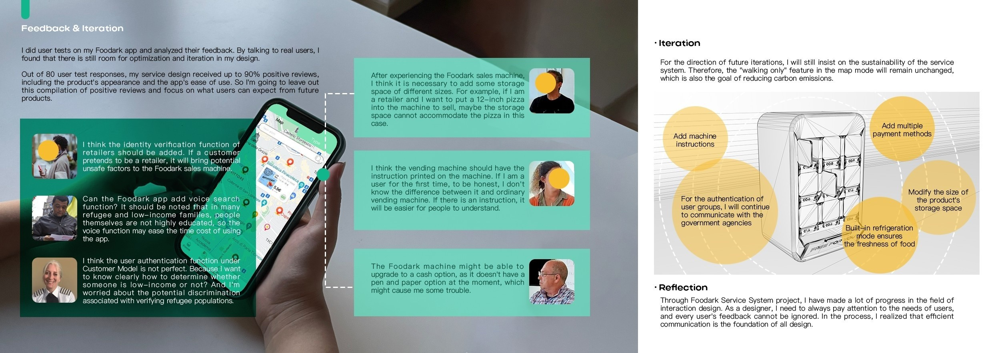